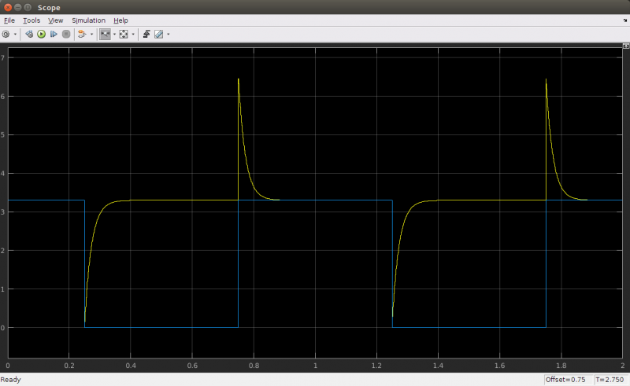

Uploading sketches to the ESP8266
The upload procedure for ESP8266 boards is a little different from the normal Arduino procedure. Most Arduinos will automatically reset when a new program is being uploaded, and will automatically enter programming mode.
On some ESP boards you have to manually enter programming mode, and on the bare-bones modules, you even have to reset them manually.
However, there are some simple circuits you can use to get automatic uploads.
Auto-reset
This only applies to boards without an on-board USB-to-Serial converter.
If the USB-to-Serial converter you're using has a DTR flow control line, you can automate the reset signal. When sending data to the ESP, the DTR line goes low, and stays low for some time. To reset the ESP, we need a low pulse on the RST pin. The problem is that the DTR pin stays low. To solve this, we're going to build a crude edge detector circuit, using a capacitor. Take a look at the following schematic:
You might recognize that this is basically a low-cut filter. In normal conditions, DTR is high (3.3V), and the reset line is also high, because of the pull-up resistor R2. This means that the voltage across the capacitor is 0V. When DTR suddenly drops (to 0V), the voltage across the capacitor is still 0V, meaning that the reset line will be at 0V + 0V = 0V, and a reset is triggered.
However, C1 immediately starts charging through R2, and reaches 3.3V. At this point, DTR is still at 0V, meaning that there's now 3.3V across the capacitor. When DTR rises again, the reset line will be at 3.3V + 3.3V = 6.6V, and then immediately starts to discharge through R2, finally reaching 3.3V again, with 0V across C1.
This is a problem: 6.6V can damage the ESP, so we have to find a way to get rid of the positive peak.
One glance at this MATLAB simulation shows us the problem even better:

The blue signal is the voltage on the DTR pin, and the yellow signal is the voltage on the reset pin.
The solution is to add a diode: while charging the capacitor, it shouldn't change anything, so it should be reverse biased (just a fancy way of saying that it's not conducting any current because the polarity is the other way around), and while the capacitor is discharging, it should discharge the capacitor "immediately".
Here's what that looks like:
Let's run the simulation again to check if our problem is solved:
As you can see, the 6.6V peak is now very narrow, just like we wanted. It's impossible to discharge the capacitor instantly, that would require a capacitor and a diode with 0Ω of series resistance, and an infinite current, which is impossible, obviously. There's also a smaller but relatively wide peak of approximately 3.9V. This is because a diode only conducts when the voltage across it is higher than ~600mV. This means that the last 0.6V that's left in the capacitor (from 3.9 to 3.3V) will still be discharged through R2 only.
Nevertheless, the voltage peak is much lower and narrower than without the diode, and it's safe to connect to the ESP8266.
This exact circuit is also used in the Arduino Uno, for example.
Note: if you followed the instructions in the hardware step correctly, you should already have added R2 to your ESP.
How to use Auto-reset
To use this auto-reset circuit, connect it to the DTR line of your USB-to-Serial converter, and to the reset line of the ESP, as shown in the diagram. Then click compile (just because the first compilation can take quite some time). Go to Tools > Reset and select 'ck'. When it's done compiling, hold down the program button we added in the hardware step, and click upload. Wait for it to say "Uploading..." and then release the program button.
Auto-reset and Auto-program
This only applies to boards without an on-board USB-to-Serial converter.
The method above still requires you to press a button to upload a new sketch. If your USB-to-Serial converter has a RTS line as well as a DTR line, you can automate the entire process.
You may find out that the 4.7kΩ resistor doesn't work for you. In that case, try some other value, like 10kΩ, for example.
This method was first used in the NodeMCU, so go to Tools > Reset Method, and select "nodemcu". This will drive the DTR&RTS pins high and low in the right sequence to get it in programming mode before uploading.
This is by far the best method, but the problem is that you need access to both the RTS and DTR pins, while most USB-to-Serial adapters break out only one of the two.
Manual reset and manual program
This only applies to boards without an on-board USB-to-Serial converter.
If you don't have a USB-to-Serial converter with DTR and RTS lines, you could also just use the reset and program buttons we added in the hardware chapter. To get the ESP in program mode, GPIO0 must be low while booting:
- press and hold the reset button
- press and hold the program button
- release the reset button, the ESP will boot in program mode
- release the program button
- upload the sketch
If you want to get out of program mode without uploading, just press reset (without pressing the program button).
Board options
If your specific board is in the Tools > Board list (e.g. NodeMCU, SparkFun and Adafruit boards), you can just select it, and you will get the right settings. When your board isn't in the list, you'll have to select a Generic ESP8266. In that case there's lots of new options in the Tools menu of the Arduino IDE, so let's go over them and pick the right settings.
Flash Mode
Like I said before, the ESP8266 uses an external flash chip for storage. You can communicate with this chip over 2 datalines (DIO), or over all 4 datalines (QIO). Using 4 lines is two times faster than 2 lines, so in most cases, you should choose QIO. (If you're doing some advanced stuff and you need 2 more GPIO pins, you could use 2 lines instead of 4, and use the 2 lines as I/O. Most modules don't give you access to these pins, though. )
Flash Size
Different boards/modules have different sizes of flash chips on board. There are boards with 512kB, 1MB, 2MB and 4MB of flash. To know how much flash your board has, you can try the Examples > ESP8266 > CheckFlashConfig to see if your flash setting is correct, or you can check the specifications of your specific board online.
You can also select the SPIFFS (SPI Flash File System) size. The SPIFFS partition is a small file system to store files. If you're not using it, you can select the minimum. Later on in the article, we'll use SPIFFS, and I'll remind you to select a larger SPIFFS size, but for now, it doesn't really matter.
Debug port
There's a load of things going on when the ESP is running: Things like Wi-Fi connections, TCP connections, DNS lookups ... you name it. All these small tasks produce a whole lot of debug output to help you troubleshoot. However, in a normal situation, where your program is behaving as expected, you don't need all those debug messages to flood the Serial Monitor, so you can just turn them off by selecting 'Disabled'.
If you do wish to receive debug messages, you can select the port to send them to. (Serial on pins 1 and 3, or Serial1 on pin 2)
Debug level
This allows you to choose what kind of debug messages you want to show.
Reset Method
As mentioned in the paragraphs above, there are different methods for auto-reset and auto-program. If you're using the first method (using the edge detector), you should use 'ck', if you use the two-transistor circuit, select 'nodemcu'.
Flash Frequency
If you need some extra memory speed, you could change the flash frequency from 40MHz to 80MHz. This is the clock frequency of the SPI/SDIO link.
CPU Frequency
If you need some extra CPU performance, you can double the clock speed from 80MHz to 160MHz. It's actually an overclock, but I've never had any issues or instability.
Upload Speed
The baud rate for uploading to the ESP. The default is 115200 baud, but you can go higher (if you're changing your sketch a lot, it might be too slow). 921600 baud works most of the time, but you may get an error sometimes, if that's the case, switching back to 115200 will probably solve all problems.
{kind=link}
{kind=link}
{kind=link}
{kind=link}
{kind=link}